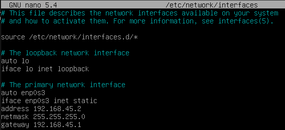
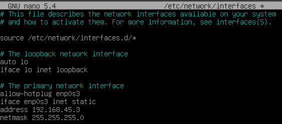
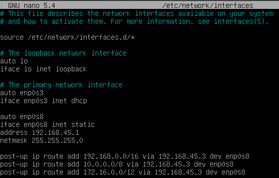

Mise en place
Les Machines Virtuelles
Nous avons choisi d’utiliser 3 machines virtuelles très basiques : une debian sans interface graphique avec un port 22 ouvert pour les connexions ssh depuis notre machine hôte afin de pouvoir utiliser notre terminal par défaut.
Mise en réseau
Pour configurer les interfaces réseau sur nos machines debian, nous utilisons le fichier /etc/network/interfaces
client 1
Voici le fichier /etc/network/interfaces de notre machine client1 :

On voit ici que nous définissons (sur l’interface enp0s3) une adresse IP statique (192.168.45.2) accompagné d’un masque de sous-réseau (255.255.255.0), cela signifie que notre machine client1 appartient au réseau 192.168.45.0/24, elle peut ainsi communiquer avec toutes les machines qui ont une adresse IP allant de 192.168.45.1 à 192.168.45.254 (les adresses 0 et 255 étant réservées respectivement à l’adresse du réseau et l’adresse de broadcast). Ainsi, si notre machine client1 souhaite communiquer avec des machines ayant des adresse IP en dehors de cette plage, elle devra passer par une passerelle (gateway). Nous définissons notre gateway à 192.168.45.1 qui sera l’adresse de notre machine frontal.
sinkhole
Voici le fichier /etc/network/interfaces de notre machine sinkhole :

Pour cette configuration, nous remarquons qu’il s’agit de la même chose que client1, seulement cette fois l’adresse IP attribuée à notre sinkhole est 192.168.45.3 et aucune gateway n’est renseignée : nous avons vu précédemment que nous ne souhaitons pas rediriger les requêtes reçues (cf explication_sinkhole).
Recap : où en est-on ?
A ce stade :
client1 et Sinkhole peuvent communiquer : les deux machines sont sur le même réseau (192.168.45.0/24)
client1 peut passer par frontal pour avoir internet et envoyer des requêtes sur d’autres plages IP
Rediriger du trafic vers Sinkhole
C’est la machine frontal qui recoit le trafic destiné à d’autres plages IP, c’est donc frontal qui peut rediriger certaines requêtes en fonction de leurs destination notamment. Pour que notre machine accepte les redirections de paquets, nous devons faire la manipulation suivante :
ouvrir le fichier
/etc/sysctl.confajouter ou décommenter la ligne net.ipv4.ip_forward = 1
Nous allons ensuite ajouter des règles de routage à notre machine pour savoir ce qu’elle redirige et par quelle interface réseau elle doit passer. Pour cela, nous allons utiliser des règles de routage. La syntaxe pour ajouter une règle de routage est :
ip route add <réseau-demandé> via <ip-machine-destination> dev <interface>
Un problème, en exécutant cette commande tout fonctionne, mais une fois la machine redémarrée, notre règle de routage n’est plus présente. Pour ajouter de la persistence à tout cela, nous pouvons directement définir cette règle de routage dans le fichier /etc/network/interfaces.
Pour cela il faut utiliser post-up suivi de la règle de routage afin de définir cette règle de routage une fois les interfaces montées.
frontal
Voici le fichier /etc/network/interfaces de notre machine frontal :

Nous voyons 3 règles de routage : une pour chaque plage d’adresse IP privées possible.